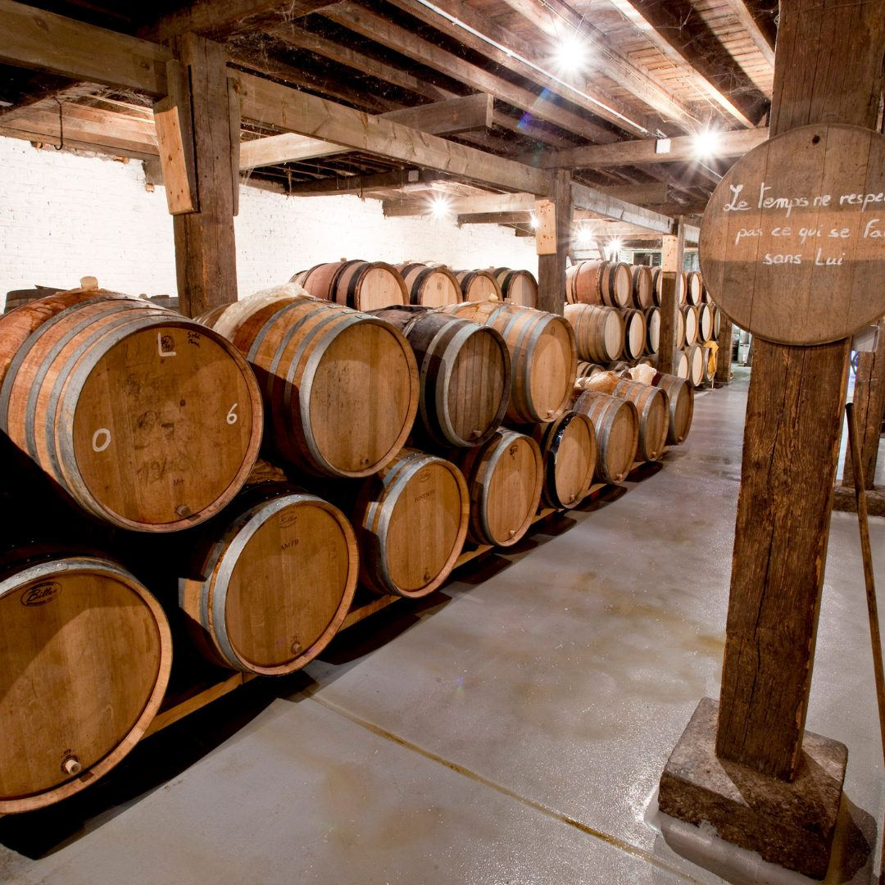

Journée bière à Bruxelles
Visite de la plus ancienne brasserie de Bruxelles, une découverte de la ville, des dégustations et des challenges !
Une journée parfaite : authenticité, bière, découverte et plaisir au rendez-vous !
Vivez une journée unique à Bruxelles !
Plongez au cœur de la capitale et de sa riche culture brassicole en trois étapes inoubliables ! Une expérience authentique, gourmande et ludique pour découvrir Bruxelles autrement.
Visite immersive de la brasserie historique
Commencez la journée en explorant la plus ancienne brasserie de Bruxelles ! Un joyau préservé qui perpétue l’art du lambic et de la gueuze, bières emblématiques de la ville, qui ont survécu à l’ère industrielle. Lors d’une visite guidée passionnante, plongez dans l’univers du malt, du houblon et des levures, puis dégustez trois bières de leur gamme.
Déjeuner gourmand dans un restaurant typique
Après cette immersion brassicole, place à un délicieux repas dans un restaurant apprécié des Bruxellois. Savourez un plat au choix, accompagné d’un dessert, de deux boissons et d’un café/thé.
Jeu de piste bière
Pour terminer cette journée en beauté, embarquez dans une aventure ludique à travers Bruxelles ! Explorez les ruelles secrètes, découvrez ses monuments incontournables.